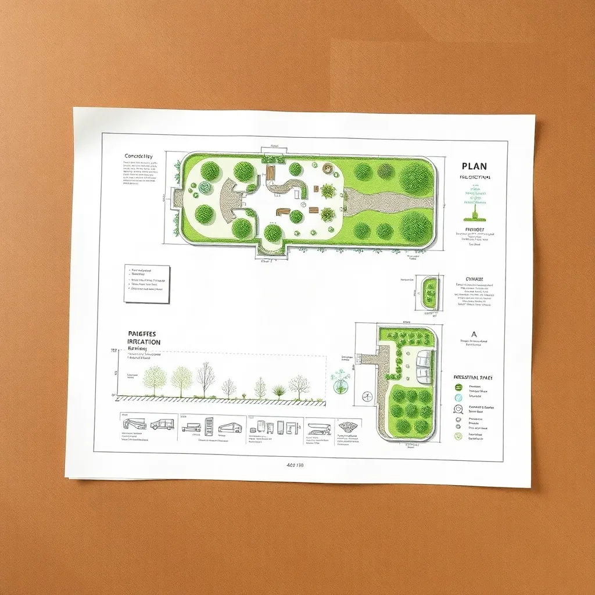

Custom Irrigation Design
Tailored irrigation system plans that maximize efficiency for any farm or garden size.
EarthWhisper brings expert irrigation consulting services and an enlightening blog for those passionate about effective, sustainable agriculture and gardening. With over 60,000+ words of in-depth content, our platform offers expert advice, latest trends, and best practices for irrigation design, installation, and maintenance.
Our mission is to help farmers, gardeners, and water managers optimize water use, reduce waste, and promote eco-friendly irrigation. We combine years of consulting experience with a dedication to educating through detailed articles and interactive insights.

Tailored irrigation system plans that maximize efficiency for any farm or garden size.
Expert supervision during irrigation system installation ensures quality and performance.
Regular system check-ups and adjustments to keep water use sustainable and effective.
Guidance to implement eco-friendly and water-saving irrigation technologies.
Comprehensive evaluations of existing irrigation systems to identify improvements and ensure compliance with best practices.
Hands-on training sessions and workshops designed to educate farmers and managers on efficient irrigation and water conservation techniques.
Smart irrigation integrates modern technology and data-driven insights to improve water efficiency and crop yields. From soil moisture sensors to AI-powered drip irrigation, discover the innovations shaping the future of farming.
Implementing smart irrigation systems can reduce water waste by up to 30%, enhance productivity, and conserve natural resources effectively.
These innovations help farmers turn irrigation into a truly smart process, improving yields and reducing costs.
Water conservation starts at home. Learn how to maintain a healthy garden while using water wisely through drip irrigation, mulching, and planting drought-resistant species.
Installing an economical drip irrigation system yourself is easier than many think and can save substantial amounts of water annually.
Take advantage of smart watering timers and moisture sensors to keep plants hydrated without waste, especially during hot and dry seasons.
Optimizing irrigation in dry areas is a challenge that can be addressed with a combination of modern techniques and traditional knowledge.
Water harvesting methods capture rainfall efficiently, providing supplementary water during droughts. Soil amendments such as adding organic matter improve moisture retention.
Crop rotation helps maintain soil health and moisture balance, promoting sustained plant growth in tough climates.
Adapting irrigation frequency and volume to the season and growth phase of crops maximizes yields and conserves water.
Seedlings often require more frequent moisture, while mature plants may thrive on reduced watering. Understanding local climate patterns helps optimize watering cycles.
Scheduling prevents overwatering and reduces the risk of disease or nutrient leaching.
Regularly inspect your irrigation setup to quickly fix leaks, clogs, and uneven water distribution.
Common issues include sediment buildup blocking emitters, cracked or damaged pipes, and incorrect pressure settings that reduce system efficiency.
Implementing a monthly maintenance checklist can significantly extend system longevity and performance.
Drip irrigation delivers water directly to the plant roots, minimizing evaporation and runoff common in other irrigation methods.
This precision watering improves plant health and reduces water consumption, making it the perfect choice for arid or drought-prone zones.
Additionally, drip systems are customizable and scalable, from small gardens to large farms.
Collecting rainwater provides an alternative water source that reduces dependency on municipal or well water.
Connecting storage tanks to irrigation systems allows for sustainable watering, especially in periods of low rainfall.
Design considerations include filtration, storage capacity, and pumping systems for efficient usage.
Emerging technologies such as Internet of Things (IoT) sensors and AI analytics enable responsive irrigation adjusting to real-time conditions.
These systems empower users by providing detailed insights and automatic adjustments to save water and increase productivity with minimal manual input.
The future of irrigation is data-driven and highly efficient.
Lawn watering precision preserves lush green color while reducing waste.
Use smart timer systems and soil moisture sensors to avoid watering during rain or high humidity.
Water deeply but infrequently to develop strong root systems and drought resilience.
The information provided on EarthWhisper is for educational and informational purposes only. While we strive to keep content accurate and up-to-date, we make no warranties or guarantees regarding the completeness, reliability, or suitability of the information for your specific needs. Always consult with a professional irrigation consultant or local authority before implementing irrigation systems or making water management decisions.